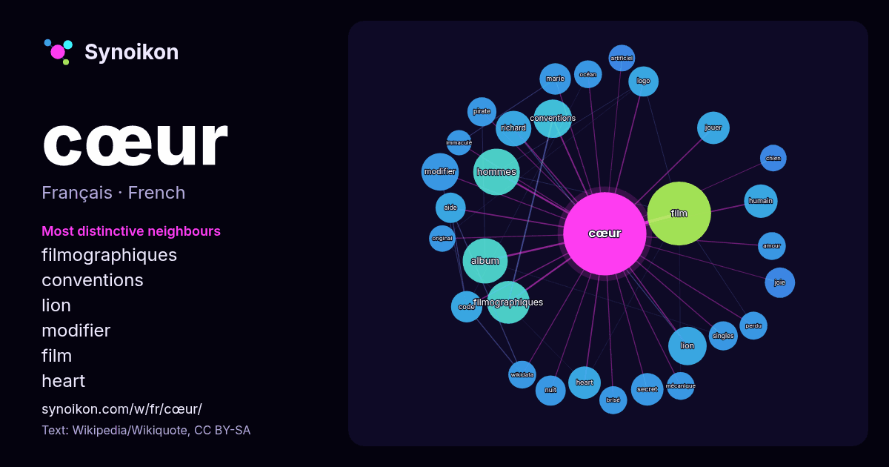

Français · mot populaire
cœur
“heart” · Les mots trouvés autour de lui dans 1251 occurrences issues de Wikipédia, Wikiquote.

Voisins les plus spécifiques
- filmographiques 27×
- conventions 21×
- lion 20×
- modifier 20×
- film 19×
- heart 15×
- richard 14×
- joie 13×
- album 13×
- logo 13×
- secret 13×
- pirate 13×
- humain 13×
- wikidata 12×
- océan 12×
- singles 12×
- aide 12×
- jouer 11×
- brisé 11×
- hommes 11×
× = combien de fois plus souvent que dans le texte général de Wikipédia.
Voisins les plus fréquents
- film 58
- hommes 31
- album 29
- filmographiques 26
- conventions 21
- grand 21
- lion 21
- modifier 20
- raisons 20
- partie 19
- série 19
- français 18
- richard 18
- france 16
- humain 16
- carte 15
- forme 15
- heart 15
- jouer 15
- secret 15
En contexte
- Pour les articles homonymes, voir Cœur (homonymie). Le cœur (en grec καρδία / kardía, en latin cor) est un organe qui assure la circulation sanguine chez Wikipedia snippets · Cœur
- Pour un article plus général, voir Cœur. Cœur humain Anatomie du cœur humain lors d'un battement. Le cœur humain est un organe musculaire creux qui assure Wikipedia snippets · Cœur humain
- … cré-Cœur » redirige ici. Pour les autres significations, voir Sacré-Cœur (homonymie). Le Sacré-Cœur est une dévotion au cœur de Wikipedia snippets · Sacré-Cœur de Jésus
- homonymes, voir Cœur. Les Restaurants du Cœur Les Relais du Cœur Les Restaurants du Cœur, plus connus sous le nom de Les Restos du Cœur, sont une association Wikipedia snippets · Les Restaurants du Cœur
- Jacques Cœur Buste présumé de Jacques Cœur (situé sur la façade du palais Jacques-Cœur à Bourges et commandé par l'intéressé). Devise : À cœurs vaillants Wikipedia snippets · Jacques Cœur
- Notre cœur est le sixième et dernier roman de Guy de Maupassant. Commencé en mai 1889, il fut d'abord publié dans la Revue des Deux-Mondes en mai et juin Wikipedia snippets · Notre cœur
- (homonymie), Cœur de pirate (album) et CDP. Cœur de pirate Béatrice Martin en 2019. Logo de Cœur de pirate. Béatrice Martin, dite Cœur de pirate (parfois Wikipedia snippets · Cœur de pirate
- homonymes, voir Sacré-Cœur (homonymie). Le Cœur immaculé de Marie est une dévotion catholique au cœur de la Vierge Marie. La fête du Cœur immaculé de Marie Wikipedia snippets · Cœur immaculé de Marie
Autres mots
- art
- automne
- carte
- chanson
- chat
- chemin
- cheval
- chien
- climat
- cloche
- dieu
- désert
- eau
- famille
- forêt
- histoire
- hiver
- horloge
- jardin
- langue
- miel
- miroir
- monnaie
- montagne
- mort
- mère
- nature
- nourriture
- ombre
- pain
- pluie
- pont
- pouvoir
- printemps
- santé
- science
- sel
- silence
- temps
- tempête
- thé
- train
- travail
- trésor
- vie
- ville
- vérité
- étoile
- île
Précalculé le 2026-10-09 avec les paramètres par défaut (±5 mots, corpus moyen). La carte interactive peut l’actualiser avec des données en direct.
Interface traduite automatiquement ; corrections bienvenues.